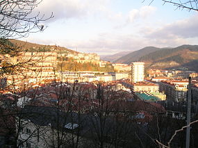

Arrasate (ofizialki: Arrasate / Mondragón) Gipuzkoako hego-mendebaldeko udalerri bat da, Debagoiena eskualdeko populatuena eta Gipuzkoako jendetsuenetan seigarrena, 21.903 biztanle baitzituen 2016. urtean. Bertakoak arrasatearrak edo mondragoetarrak dira. Bergarako barruti judizialaren menpe dago.
| Azalera | 34,20 km2 |
| Biztanleria | 21.903 biztanle |
| Sorrera | 1260. Urtea |